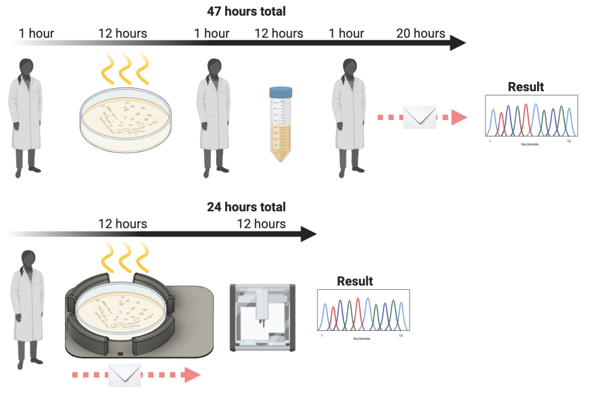

In a post-COVID world, research labs are stretched to capacity. Social distancing means that fewer researchers can work at the bench at the same time.
Researchers don't want to spend time on repetitive tasks which are easily automatable
Increasing the turnaround speed for building to sequencing allows scientists to make decisions faster
Increasing the turnaround speed for building to sequencing allows scientists to make decisions faster
